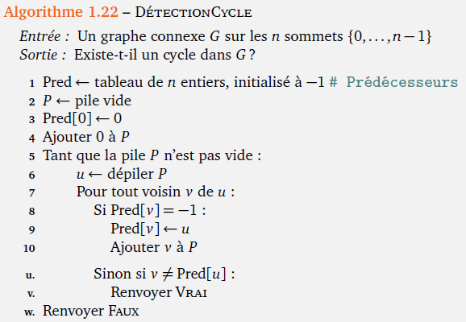

Implémentation des graphes en Python¶
Comme nous l'avons vu dans le cours, il existe deux manières de représenter les graphes :
- en utilisant les listes d'adjacence (ou listes de successeurs),
- en utilisant des matrices d'adjacence.
Dans cette partie, nous implémenterons la structure de graphe en Python en choisissant comme paradigme la programmation orientée objet (POO).
Nous proposerons une première implémentation en utilisant une liste d'adjacence que l'on implémentera en Python sous la forme d'un dictionnaire. Nous élaborerons ensuite une seconde implémentation en utilisant une matrice d'adjacence, implémentée sous la forme d'une liste de listes.
On distinguera une structure de graphe non-orienté, et une structure de graphe orienté.
Graphe non-orienté¶
Type abstrait¶
Avant d'implémenter notre structure de graphe en Python, définissons tout d'abord le type abstrait Graphe, ainsi que les opérations qui y sont associées.
Type abstrait Graphe
Utilise : Sommet, Entier, Booléen, Liste
Opérations de base :
\(nouveau\_graphe :~\rightarrow Graphe\)
\(ajouter\_sommet :~Graphe \times Sommet \rightarrow Graphe\)
\(ajouter\_arete :~Graphe \times Sommet \times Sommet \rightarrow Graphe\)
\(supprimer\_sommet :~Graphe \times Sommet \rightarrow Graphe\)
\(supprimer\_arete :~Graphe \times Sommet \times Sommet \rightarrow Graphe\)
Autres opérations :
\(est\_sommet :~Graphe \times Sommet \rightarrow Booléen\)
\(est\_arete :~Graphe \times Sommet \times Sommet \rightarrow Booléen\)
\(ordre :~Graphe \rightarrow Entier\)
\(degre :~Graphe \times Sommet \rightarrow Entier\)
\(voisins :~Graphe \times Sommet \rightarrow Liste\)
Implémentation avec un dictionnaire¶
À faire 1
Téléchargez le fichier Python ci-dessous :
graphe.py
Complétez chaque méthode de la classe Graphe (à l'exception de la méthode affiche qui vous est donnée.)
Test de votre classe
Dans le bloc en bas de script if __name__ == "__main__", ajoutez les instructions suivantes :
graphe = Graphe() # création d'un nouveau graphe
graphe.ajouter_arete('A', 'B') # ajout d'une arête entre A et B
graphe.ajouter_arete('B', 'C') # ajout d'une arête entre B et C
graphe.ajouter_arete('C', 'D') # ajout d'une arête entre C et D
graphe.ajouter_arete('D', 'A') # ajout d'une arête entre D et A
graphe.ajouter_arete('A', 'C') # ajout d'une arête entre A et C
graphe.affiche() # afficher le graphe
Si votre programme est correct, vous devriez obtenir la visualisation suivante en exécutant votre programme :

Solution - À faire 1
Voici l'implémentation des opérations définies dans le type abstrait Graphe :
import networkx as nx
import matplotlib.pyplot as plt
class Graphe:
# Opérations de base
def __init__(self):
''' Constructeur de la classe Graphe. '''
self.adj={}
def ajouter_sommet(self, s:str):
''' Ajoute un sommet dans le graphe.
On vérifiera si le sommet n'existe pas déjà. '''
if not s in self.adj:
self.adj[s] = []
def ajouter_arete(self, s1:str, s2:str):
''' Ajoute une arête entre les sommets s1 et s2 du graphe.
Si les sommets n'existent pas, on les crée. '''
self.ajouter_sommet(s1)
self.ajouter_sommet(s2)
self.adj[s1].append(s2)
self.adj[s2].append(s1)
def supprimer_sommet(self, s:str):
''' Supprime le sommet s du graphe, ainsi que les arêtes associées. '''
if self.est_sommet(s):
for voisin in self.adj[s]:
self.adj[voisin].remove(s)
del self.adj[s]
def supprimer_arete(self, s1:str, s2:str):
''' Supprime l'arête du graphe entre les sommets s1 et s2. '''
if self.est_arete(s1,s2):
self.adj[s1].remove(s2)
self.adj[s2].remove(s1)
# Autres opérations
def est_arete(self,s1,s2) -> bool:
''' Renvoie True si une arête existe entre s1 et s2, False sinon. '''
return s1 in self.adj[s2] and s2 in self.adj[s1]
def est_sommet(self,s) -> bool:
''' Renvoie True si s est un sommet du graphe, False sinon. '''
return s in self.adj
def ordre(self) -> int:
''' Renvoie l'ordre du graphe. '''
return len(self.adj)
def degre(self, s: str) -> int:
''' Renvoie le degré d'un sommet s donné du graphe.
On vérifiera si le sommet existe.
Si le sommet n'existe pas, on renvoie -1. '''
if est_sommet(s):
return len(self.adj[s])
else:
return -1
def voisins(self, s: str) -> list:
''' Renvoie une liste des voisins du sommet donné.
On vérifiera si le sommet existe. '''
if est_sommet(s):
return self.adj[s]
else:
return []
def affiche(self):
''' Affiche une représentation visuelle du graphe. '''
G = nx.Graph()
for sommet, voisins in self.adj.items():
for voisin in voisins:
G.add_edge(sommet, voisin)
nx.draw(G, with_labels=True, node_color='skyblue', node_size=800, font_size=12, font_weight='bold')
plt.show()
Parcours de graphes¶
À faire 2
Dans votre fichier graphe.py, ajoutez une fonction parcours_largeur(self, s: str) -> list qui prend un sommet en entrée et renvoie la liste des sommets parcourus avec un parcours en largeur.
Vous écrirez cette fonction de manière itérative.
À faire 3
Ajoutez une fonction parcours_profondeur(self, s: str) -> list qui prend un sommet en entrée et renvoie la liste des sommets parcourus avec un parcours en profondeur.
Vous écrirez cette fonction de manière itérative.
À faire 4
Écrivez maintenant une fonction parcours_profondeur_rec(self, s: str) -> list qui effectue le même parcours en profondeur, mais de manière récursive.
Aide - À faire 4
def parcours_profondeur_rec(self, s: str, visites=None) -> list:
''' Effectue un parcours en profondeur de manière récursive. '''
if visites is None: # si c'est le premier appel de la fonction,
visites = [] # on initialise la liste des sommets visités
... # ajouter le sommet s aux sommets visités
for ... in ...: # pour chaque sommet voisin du sommet s
if ... not in ...: # si le voisin courant n'a pas déjà été visité
... # on parcourt récursivement ce sommet
return ... # on renvoie la liste des sommets visités
À faire 5
Écrire une fonction distances(self, s: str) -> dict qui renvoie le dictionnaire des distances entre un sommet s donné et chaque autre sommet du graphe, après avoir effectué un parcours en largeur.
On procédera de la manière suivante :
- initialiser le dictionnaire des distances, contenant initialement le sommet
s, auquel on associera la distance0, - initialiser une file contenant initialement le sommet
s, - tant que la file n'est pas vide :
- on défile la file pour récupérer un sommet,
- on récupère la distance associée à ce sommet,
- pour chaque sommet voisin du sommet défilé :
- si le sommet n'a pas déjà été visité, on l'ajoute au dictionnaire en lui associant la distance appropriée, et on l'enfile dans la file.
- on renvoie le dictionnaire des distances.
Connexité, cycles et arbre¶
On souhaite ajouter une méthode à notre classe Graphe permettant de déterminer si un graphe est un arbre.
On rappelle qu'il faut pour cela vérifier :
- que le graphe soit connexe,
- que le graphe ne contienne aucun cycle.
À faire 6
Écrivez une fonction est_connexe(self) -> bool qui renvoie True si le graphe est connexe, et False sinon.
Pour la détection des cycles, on utilisera l'algorithme suivant, basé sur le parcours en profondeur :

On adaptera cet algorithme pour qu'il puisse fonctionner avec des sommets autres que des entiers de 0 à n, en utilisant non pas une liste de prédecesseurs mais un dictionnaire des prédecesseurs.
À faire 7
Recopiez et complétez la fonction detection_cycle suivante :
def detection_cycle(self, s: str) -> bool:
''' Renvoie true si un cycle atteignable par s est détecté, False sinon. '''
pile = [s] # création d'une pile contenant uniquement le sommet s
pred = {s: s} # création du dictionnaire des prédecesseurs
# À compléter
pass
Puisque l'on utilise un dictionnaire au lieu d'un tableau, l'instruction Si Pred[v] = -1 dans le pseudo-code, qui permet de vérifier si le sommet v n'a pas déjà été visité, sera remplacé par Si v EST DANS pred.
Graphe orienté¶
Type abstrait¶
Nous allons définir cette fois un type abstrait GrapheO, représentant un graphe orienté, ainsi que les opérations qui y seront associées.
Type abstrait Graphe
Utilise : Sommet, Entier, Booléen, Liste
Opérations de base :
\(nouveau\_graphe :~\rightarrow Graphe\)
\(ajouter\_sommet :~Graphe \times Sommet \rightarrow Graphe\)
\(ajouter\_arc :~Graphe \times Sommet \times Sommet \rightarrow Graphe\)
\(supprimer\_sommet :~Graphe \times Sommet \rightarrow Graphe\)
\(supprimer\_arc :~Graphe \times Sommet \times Sommet \rightarrow Graphe\)
Autres opérations :
\(est\_sommet :~Graphe \times Sommet \rightarrow Booléen\)
\(est\_arc :~Graphe \times Sommet \times Sommet \rightarrow Booléen\)
\(ordre :~Graphe \rightarrow Entier\)
\(degre :~Graphe \times Sommet \rightarrow Entier\)
\(voisins :~Graphe \times Sommet \rightarrow Liste\)
Implémentation avec une matrice d'adjacence¶
À faire 1
Téléchargez le fichier Python ci-dessous :
grapheo.py
Complétez chaque méthode de la classe Graphe (à l'exception de la méthode affiche qui vous est donnée.)